Product testing for Evergreen Office. Real use cases, synthetic data, month by month.
13 October 2026
| Use case | The question it answers | |
|---|---|---|
| UC1 | P&L and NAV explanation | Why did NAV move this month? |
| UC2 | Reconciliation and break desk | Where do two records of the same money disagree? |
| UC3 | Manager information inbox | What did our managers send, and what is late? |
| UC4 | Certified reporting and benchmark | Is the signed monthly report right against the benchmark? |
| UC5 | Allocation and limit monitoring | Are we inside our limits? |
| UC6 | Private-asset liquidity and commitments | Can we meet the capital calls? |
| UC7 | Manager diligence research | What do we know about this manager, in one place? |
| UC8 | Trade and valuation control | Do our trades agree with the administrator? |
| UC9 | Process map and SOP builder | How is the monthly work done, step by step? |
| UC10 | Data pipeline and insight builder | How does a question become a live dashboard? |
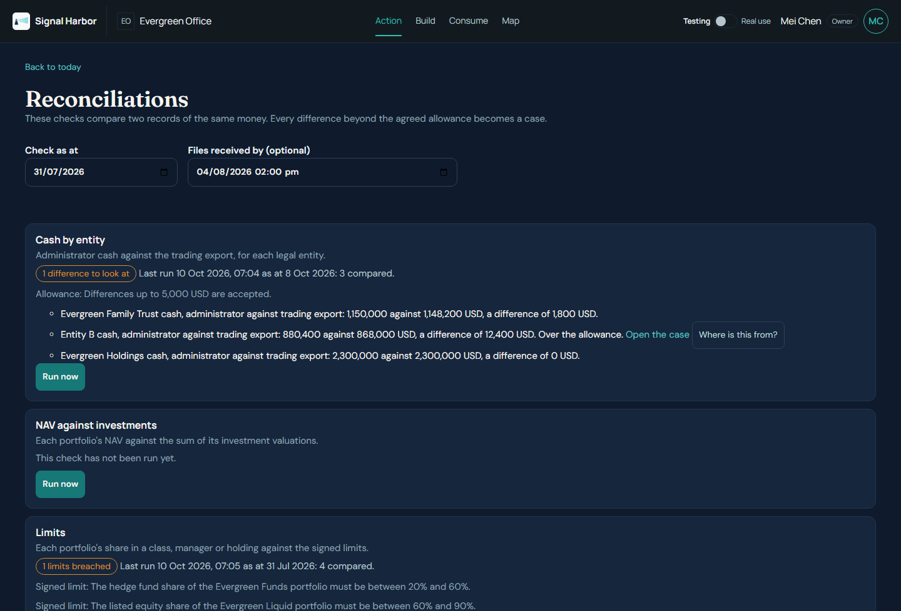
Reconciliations: the monthly check, with the date the files were received.
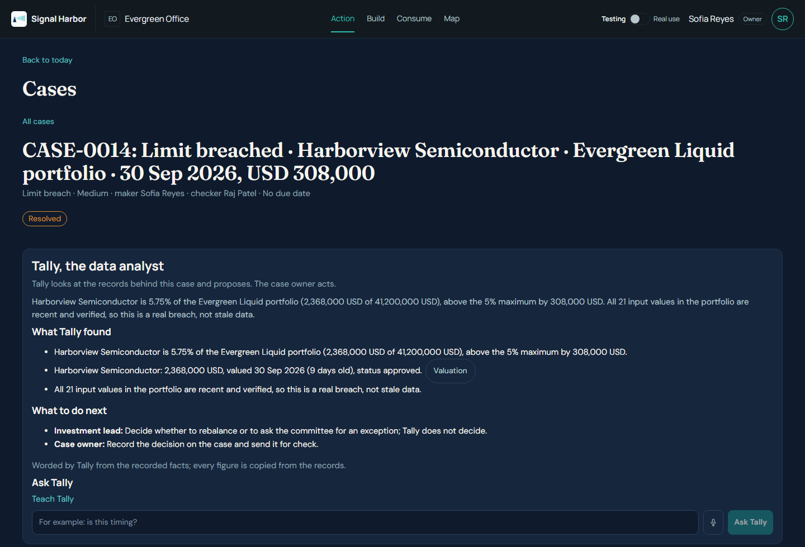
The Harborview case: what Tally found and what to do next.
| Found in the test | Fixed |
|---|---|
| A file loaded late never counted for the day it arrived | The check now reads by the date a file was received |
| A breach that stayed open opened a new case every month | One case per standing breach; later months are added to it |
| The administrator's totals block under the data was ignored | Read as control totals and checked against the rows |
| Limit changes had to be typed in by hand | Import the signed limits workbook; the CIO signs the changes |
| Still open: a limits dashboard in Consume, and new valuations inside the administrator file | Two decisions for you; see the last slide |
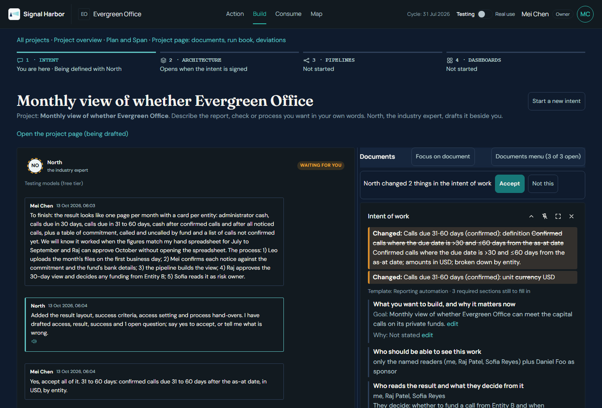
Intent: North drafts the intent as Mei talks.
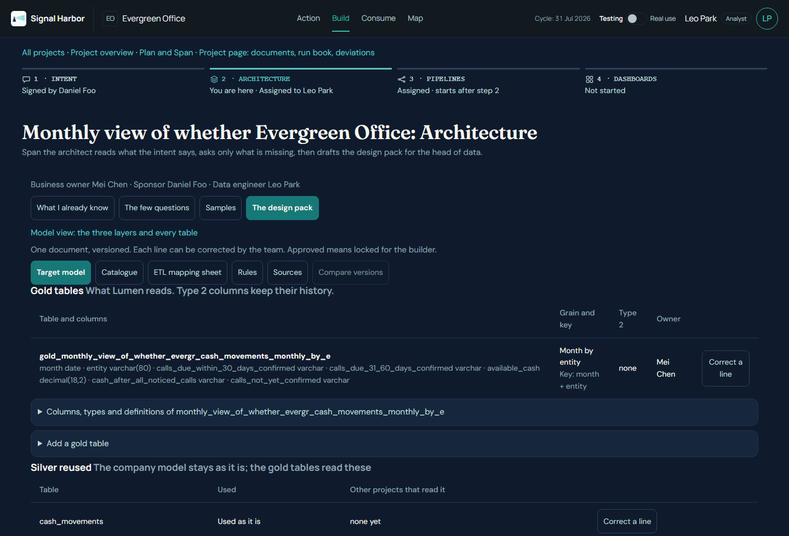
Build: Span's design pack, with gold tables and silver reused.
| Figure | Key July | Run July | Key August | Run August |
|---|---|---|---|---|
| Cash, Holdings | 2,305,906.48 | 2,305,906.48 | 2,287,630.12 | 2,287,630.12 |
| Cash, Trust | 1,252,492.34 | 1,252,492.34 | 1,199,690.58 | 1,199,690.58 |
| Cash, Entity B | 905,000.00 | 905,000.00 | 654,014.07 | 654,014.07 |
| Cash, three entities | 4,463,398.82 | 4,463,398.82 | 4,141,334.77 | 4,141,334.77 |
| Calls due, shortfall | none | none | none | none |
Fixed after the test: Span's first gold design did not run; one late notice changed the amount still to be called; North listed some figures as sources. Still open: Action raised a case for a call already paid.
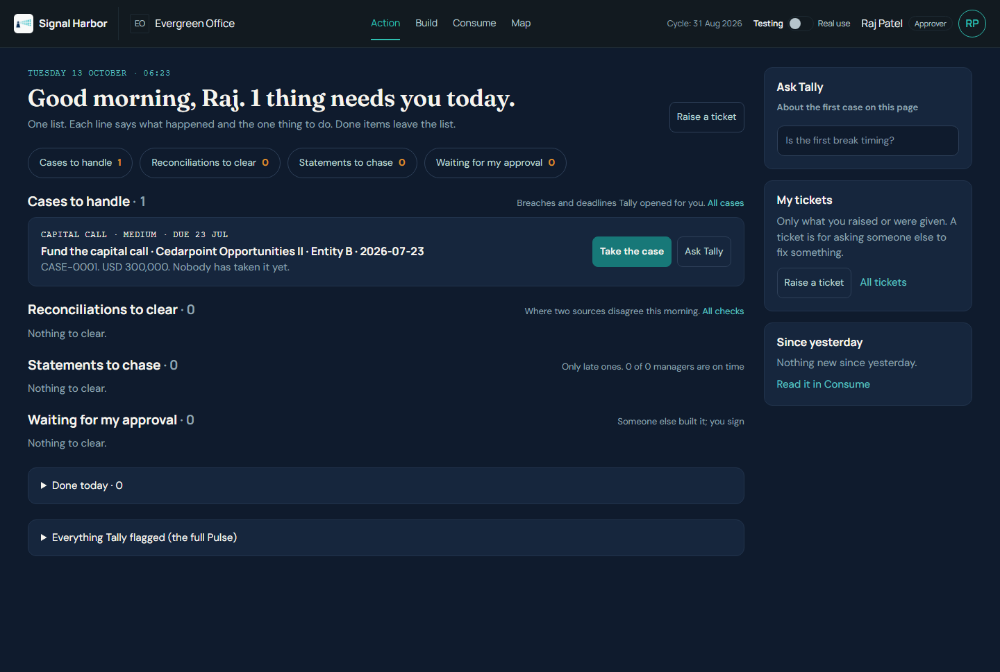
Action, as Raj the approver, in the August cycle.
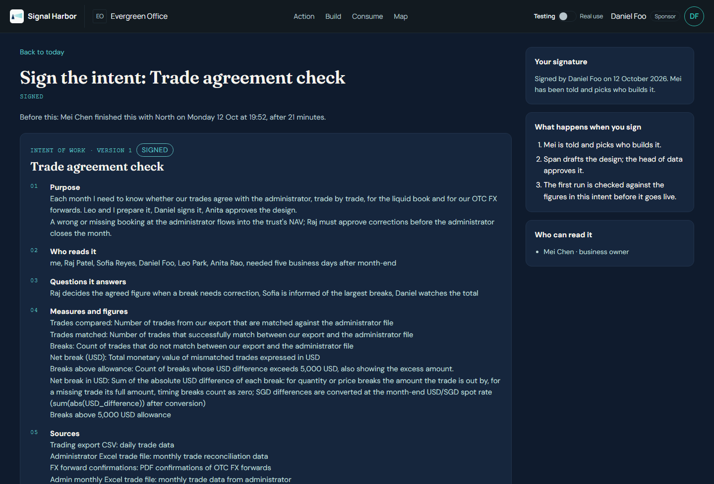
The signed intent: purpose, readers, figures and sources.
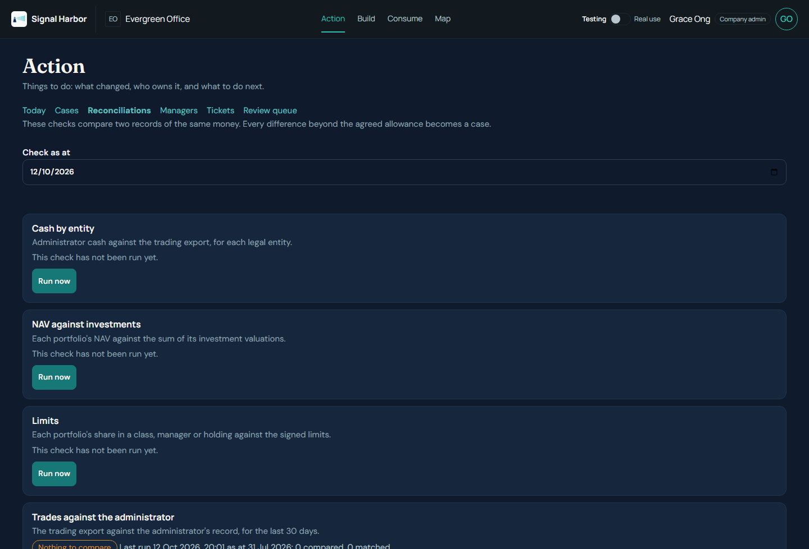
The trade check before any trades were loaded.
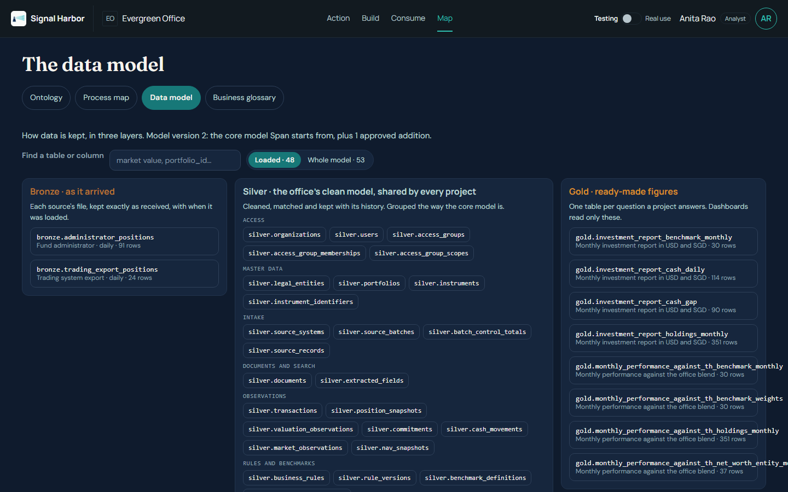
Map, Data model: bronze, silver and gold, and what a change would touch.
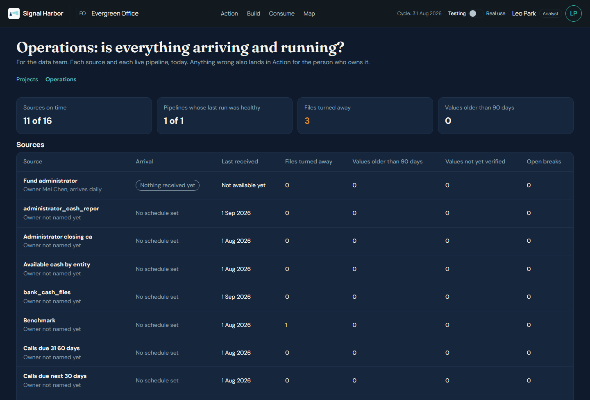
Operations: every source, every run, every run ID.
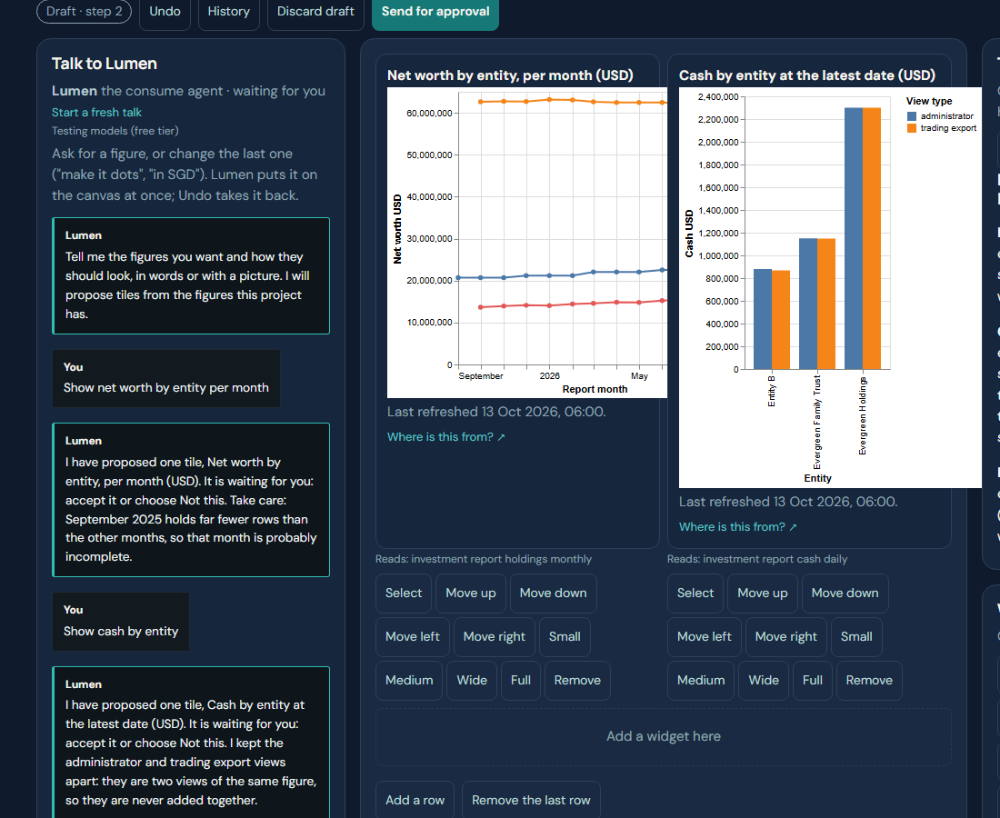
The studio: talk to Lumen on the left, the tiles it placed on the right.
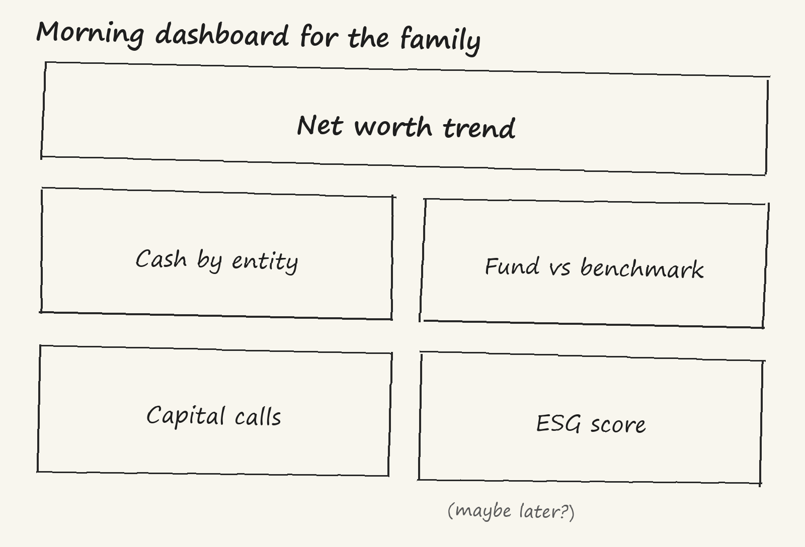
1. The sketch, drawn by hand
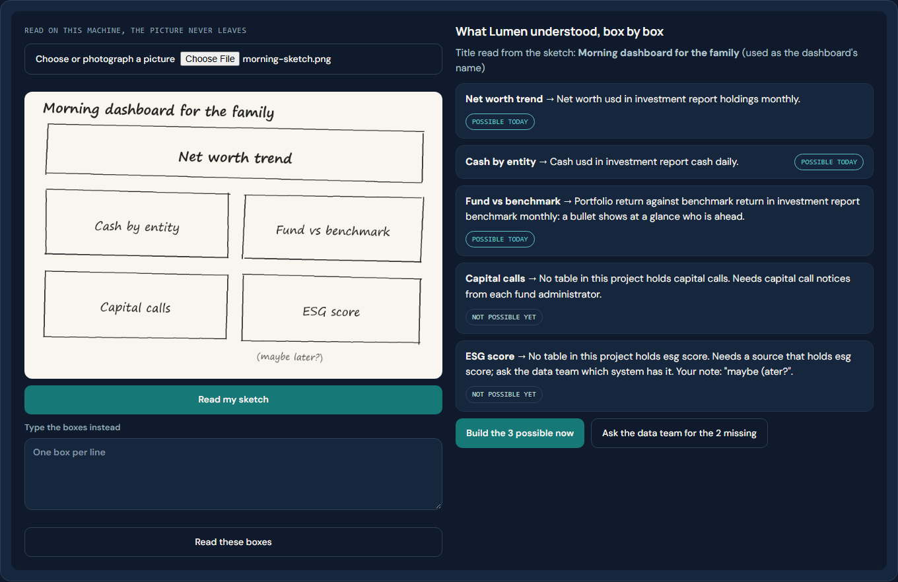
2. What Lumen read
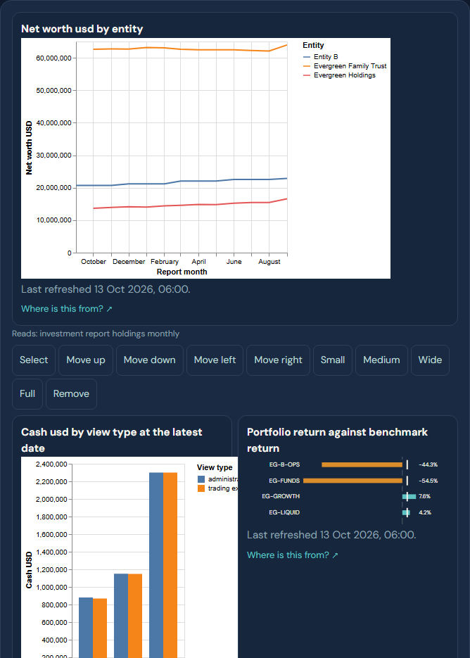
3. The built dashboard
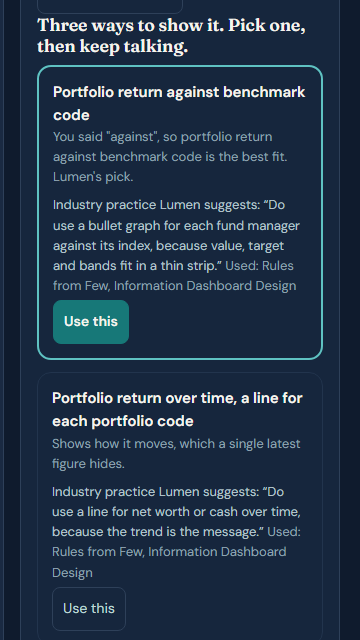
Lumen's pick, with the industry practice behind it. The next option follows below.
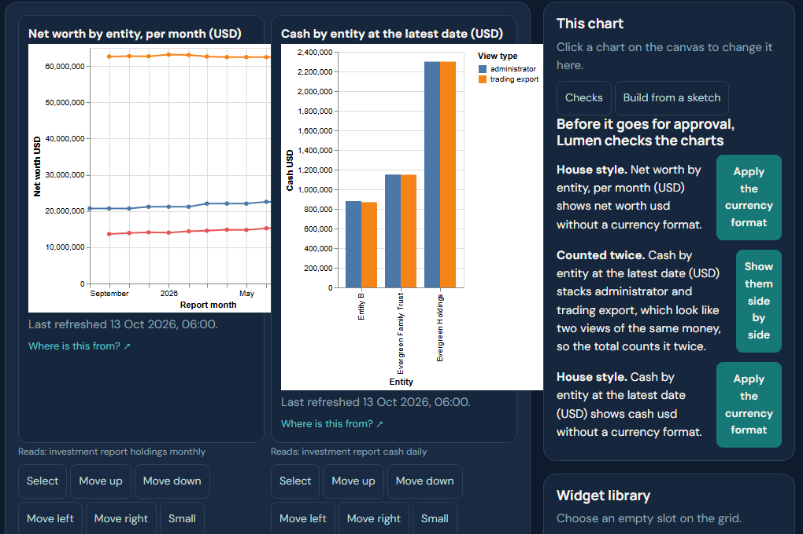
The checks panel, each finding with its fix.
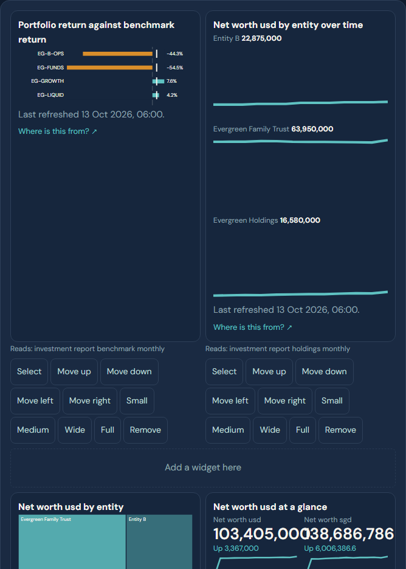
New chart types on synthetic data.
Drawn from classic books on dashboard design, data modelling and investment basics. Practice is suggested, never forced: the person decides.